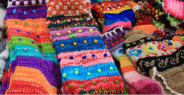
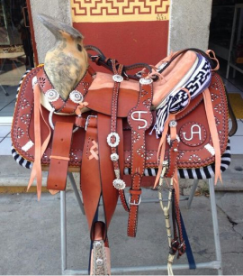

LA ARTESANÍA
Es el arte y técnica de trabajo manual no industrializado, realizado por artesanos, utilizando materia prima natural o la producción de un artesano; Está destinado a un tiempo utilitario y artístico. Pero con la mecanización de la industria el artesano es identificado como el que produce objetos pertenecientes a la llamada cultura popular.
Son identidad, belleza y utilidad, todo al mismo tiempo. Son objetos capaces de representar culturas y saberes remotos y cercanos. En todas las casas hay algún objeto artesanal, quizás recuerdo de un viaje, herencia familiar, algún elemento cotidiano que adoramos usar, una compra feliz en un día de feria.
¿Cómo surge?

La artesanía surgió con el hombre y participó en su evolución a través de los años. Cuando el hombre aprendió a manejar los elementos de la naturaleza, como pulir piedras, hacer pinturas naturales y tallar madera, la artesanía comenzó a tomar forma.
Somos seres pensantes e inteligentes y nuestra creatividad siempre ha estado presente. Teníamos ganas de moldear nuestros sentimientos y el hombre se dio cuenta de que podía hacerlo a través del arte (un ejemplo son las pinturas rupestres).
Características de la artesanía
- Se obtiene a través del tranajo manual
- Es ecológica
- De gran utilidad o simple decoración
- Estética única
- Hechas en base a la tradición del lugar
- Buena durabilidad a bajo coste
Tipos de Artesanías
-
Cerámica
Es la creación de piezas artísticas en arcilla, usando arcilla, las manos y un torno alfarero.
-
Textil
Se usan fibras vegetales, de animal o sintéticas para elaborar prendas de vestir, decorativas o funcionales.
 -
Orfebrería
En el arte de la orfebrería se utiliza el cobre, plata, oro, alambre y piedras preciosas, para hacer bisuterías, objetos funcionales y joyas.
-
Alimentaria
Es la transformación de alimentos del campo en otros alimentando haciendo un buen uso del medio ambiente.
-
Carpinteria
Consiste en la creación de artículos y objetos con madera, como cajas, estructuras, muebles, adornos o estructuras.
-
Alfarería
Es el arte de hacer o construir objetos con barroo arcilla.

-
Bisutería
Es el arte de producir objetos o materiales de adorno, los cuales no están hechos con materiales preciosos.
-
Cestería
Es una técnica artesanal, con la cual se realizan canastas y cestas tejidas con fibras naturales, como la paja.

-
Talabartería
Es el arte de elaborar distintos artículos en cuero como zapatos, sandalias correas o implementos necesarios en las caballerías.
 -
Tapicería
Es el arteque realiza el tapicero, el cual realiza trabajos en muebles sillones o asientos de coche utilizando materiales como las telas.
¿Qué es la arcilla?
La arcilla es una roca sedimentariacompuesta por agregados de silicatos de aluminio hidratados procedentes de la descomposición de rocas que contienen feldespato, como el granito.
Proceso de preparación de la arcilla
Pasos
- Arcilla preparada para su extracción y preparación
- Una vez extraída la arcilla se va echando con agua y moviendo en un fuentón grande.
- Después se va echando la mezcla a un tacho por medio de un tamiz para que la mezcla quede totalmente limpia y se pueda luego trabajar bien con ella.
- Se recoge del tacho para pasarlo a moldes y con estos darles una determinada forma, luego se los deja en el sol para que seque y una vez secas se saca la forma de arcilla del molde.
- Se los hornea a una alta temperatura y ¡LISTO!